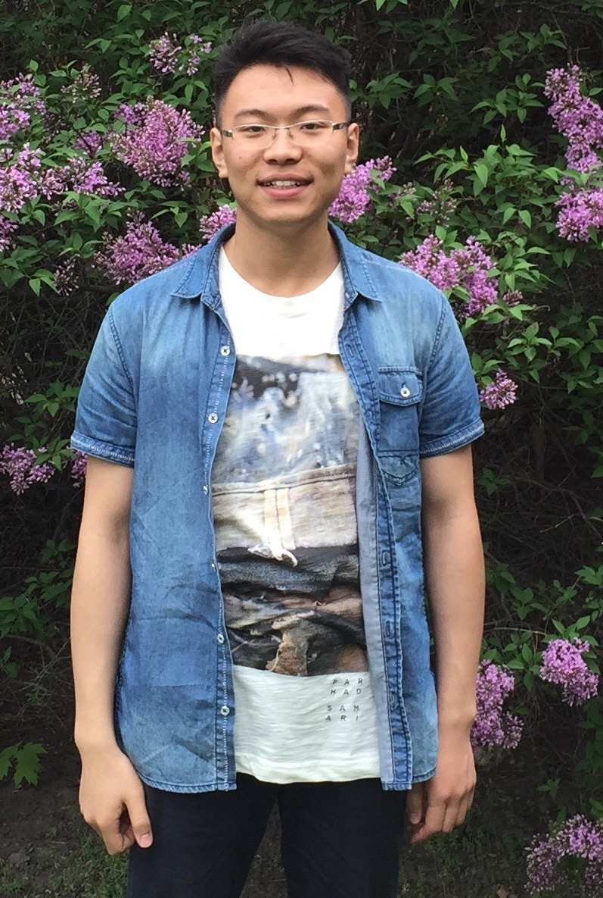

Welcome! My name is Zhe Wang and I'm pursuing my Ph.D. degree in Computer Science at Univeristy of Virginia under the supervision of Professor Yanjun Qi. I am interested in machine learning and focus on the machine learning tasks on discrete data, such as bio-data and text.
My research interests lie in Machine Learning and Deep Learning. I am particularly interested in learning theory, optimization, generative model and have a systematic knowledge related to these fields. Feel free to look at my research and my tutorials to known more!